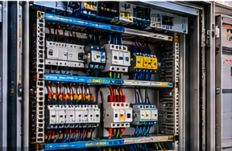
NIVEL 0
La electricidad explicada para un taller CNC
Corriente, tensión, intensidad y trifásica explicadas desde cero.
Leer artículo →


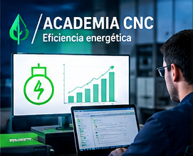
Curso gratuito de eficiencia energética y electricidad industrial aplicada a máquinas CNC.
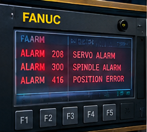
Errores Fanuc, Siemens, Heidenhain, Mitsubishi, Fagor y soluciones paso a paso.
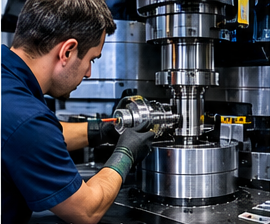
Geometría, lubricación, husillos, guías, precisión y mantenimiento preventivo.
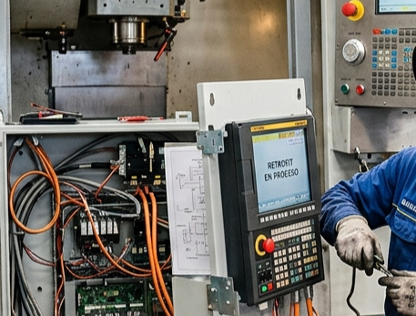
¿Cuando es necesario realizar un retrofit?. Actualización de controles numéricos, servomotores y esquemas eléctricos para modernizar tu máquina.
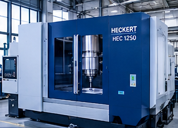
Trabajos reales realizados por CNCSystems en talleres e industria.
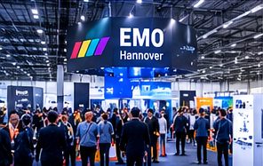
Ferias EMO, BIEMH, nuevas tecnologías CNC y normativas.
Aprende desde cero cómo funciona la electricidad de una máquina CNC, cómo medir su consumo y cómo elaborar informes profesionales de rendimiento energético.
Introducción a la eficiencia energética.
Electricidad Industrial.
Consumo energético.
METREL MI2883.
VDMA 34179.
ISO 50001.

Corriente, tensión, intensidad y trifásica explicadas desde cero.
Leer artículo →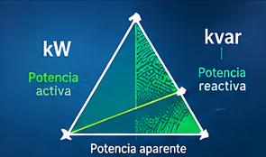
Comprende qué significan los kW, kvar y kVA.
Leer artículo →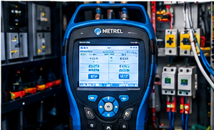
Configuración, medición y análisis de datos.
Leer artículo →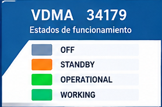
Cómo clasificar los estados OFF, STANDBY, OPERATIONAL y WORKING.
Leer artículo →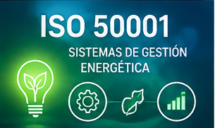
Cómo gestionar la energía en un taller de mecanizado.
Leer artículo →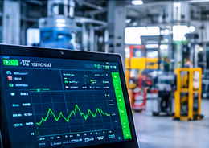
Análisis real del consumo durante producción y standby.
Leer artículo →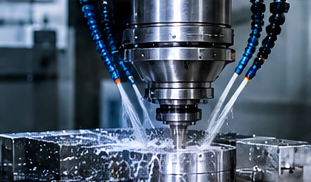
Caracterización energética mediante analizador METREL.
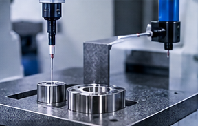
Recuperación de precisión de un centro de mecanizado.
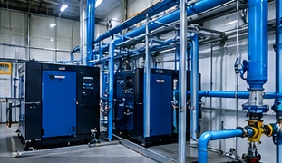
Evaluación del aire comprimido y pérdidas energéticas.
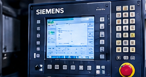
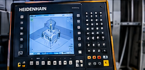